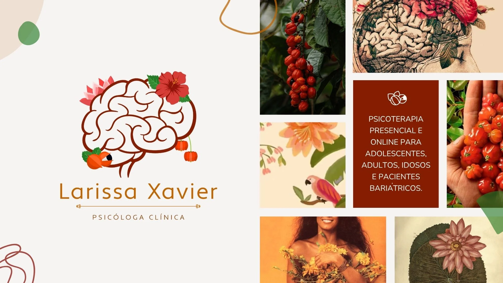
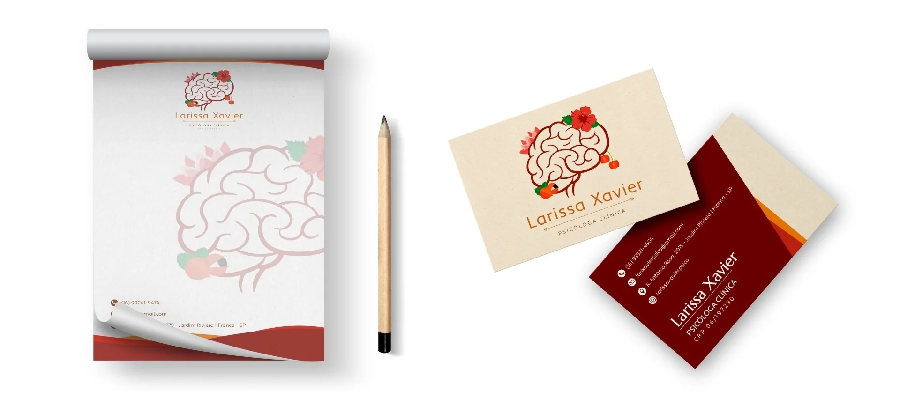
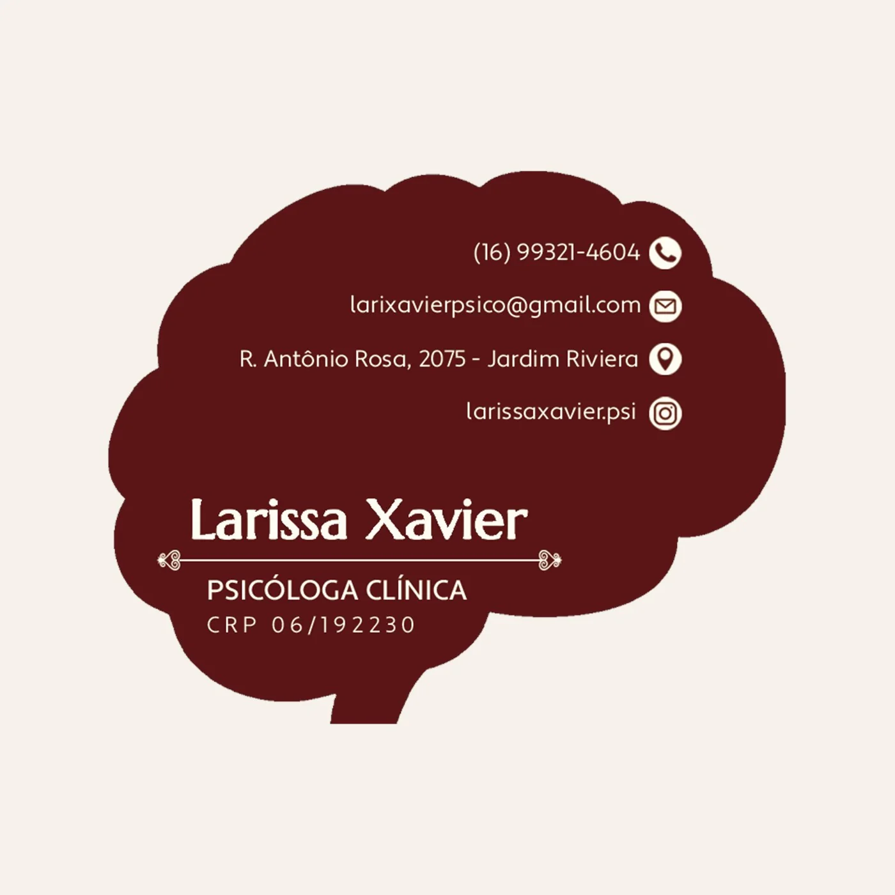
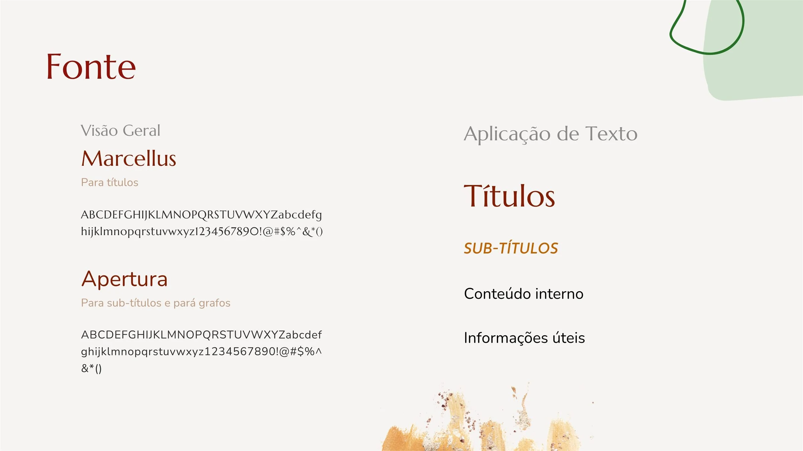
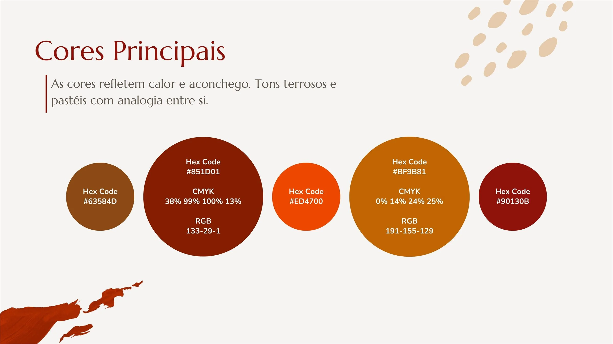
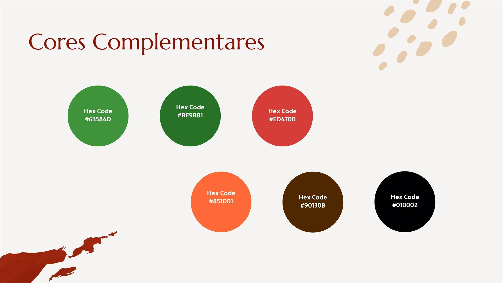

Traduzir a marca com acolhimento e clareza.
Construir uma identidade que representasse a atuação profissional de Larissa Xavier de forma acolhedora e contemporânea, sem perder clareza e reconhecimento.
Identidade visual acolhedora e contemporânea para uma marca profissional.

Desenvolvi a identidade visual de Larissa Xavier, psicóloga clínica, para traduzir a personalidade profissional da marca em uma linguagem acolhedora e contemporânea.
O trabalho reuniu a construção da identidade e suas diretrizes, com aplicações em diferentes materiais e pontos de contato.

Construir uma identidade que representasse a atuação profissional de Larissa Xavier de forma acolhedora e contemporânea, sem perder clareza e reconhecimento.

O símbolo reúne três elementos: o cérebro, que representa a mente humana e o trabalho da psicóloga na promoção do autoconhecimento; a flor de hibisco, associada à harmonia e ao equilíbrio emocional; e o fruto de pitanga, que traz doçura, simplicidade e o retorno ao essencial.
Em torno dele, desenvolvi a tipografia, uma paleta em tons terrosos que transmite calor e aconchego e os elementos gráficos, documentados em um manual de marca com orientações de uso.
As aplicações incluem cartões de visita, um deles no formato do cérebro, e a papelaria de atendimento, reforçando a consistência visual em todos os pontos de contato com o paciente.


